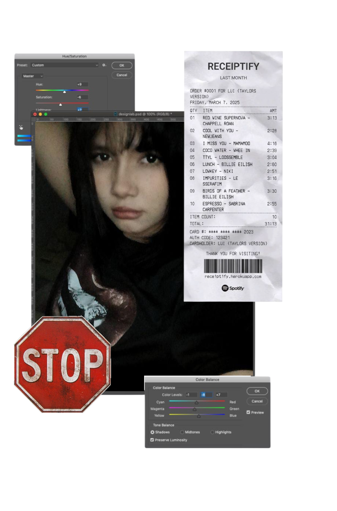

Soy estudiante de Multimedia y Comunicación Gráfica, con formación en el uso de herramientas creativas como Adobe Illustrator, Adobe InDesign y conocimientos en HTML. Me apasiona el diseño visual y me especializo en crear soluciones gráficas que combinan estética, funcionalidad y comunicación efectiva. Mi enfoque se basa en la atención al detalle, el pensamiento estratégico y una fuerte sensibilidad visual, lo que me permite aportar propuestas innovadoras que fortalecen la identidad visual de marcas y mejoran la experiencia del usuario. Me adapto con facilidad a distintos entornos creativos y disfruto trabajar en proyectos donde pueda unir lo técnico con lo conceptual para generar impacto visual y valor comunicacional.
Tecnico en multimedia y comunicación gráfica Corporación Bolivariana del Norte - Santa Marta Instituto Tayrona Graduada en diciembre 2022. Bachillerato académico (Cursando tercer semestre)
Manejo avanzado de Adobe Illustrator Manejo avanzado de Adobe InDesign Conocimientos básicos en HTML Uso básico de Word y Excel. Diseño gráfico y composición visual Creación y desarrollo de identidad visual Diseño editorial Diseño digital y multimedia Soluciones visuales funcionales y atractivas Pensamiento creativo y estratégico Atención al detalle Comunicación visual efectiva Resolución de problemas Trabajo en equipo Adaptabilidad Organización y gestión del tiempo Capacidad para recibir y aplicar retroalimentación Orientación a resultados Innovación en soluciones gráficas
